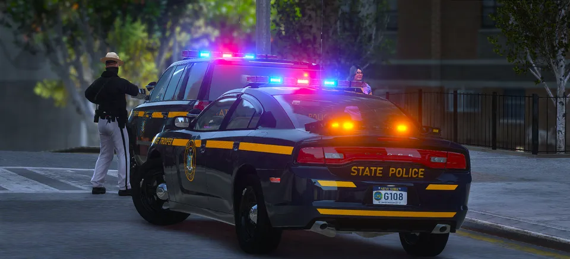
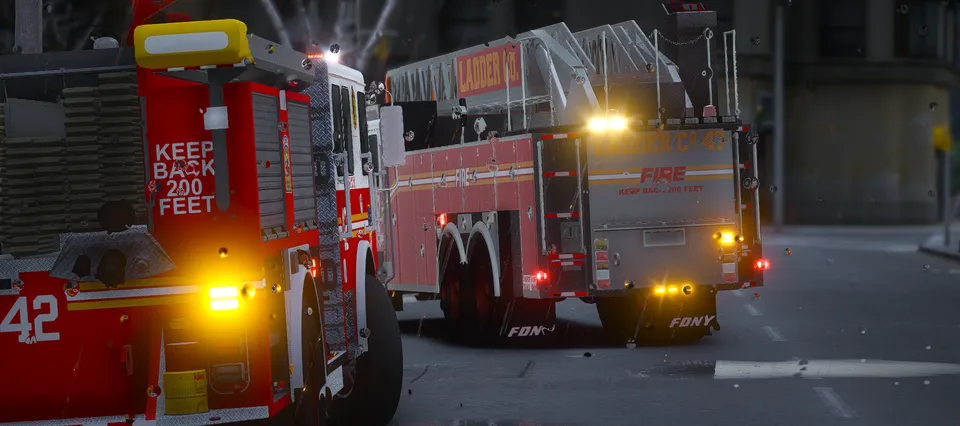
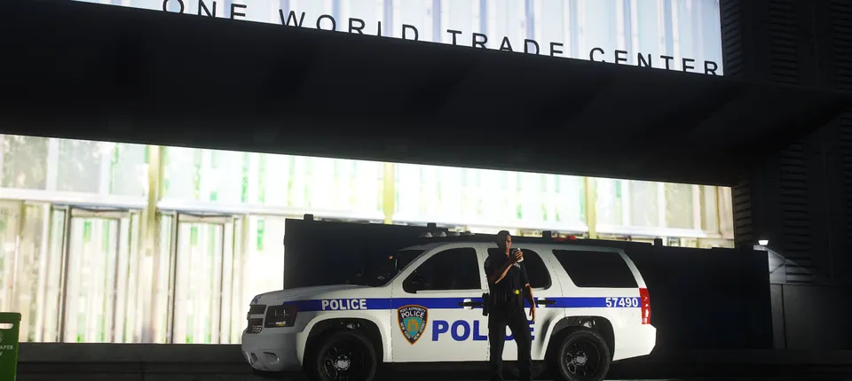

NEW YORK CITY POLICEAVAILABLE FROM THE START
The starting departments and XP unlocks
from NYRP’s server guide.
Start with NYPD, NYSP, FDNY, or PAPD.
All divisions in each department are open.



Activity earns XP toward additional departments.
You begin as a police officer or detective grade 3. In fire, you start as a firefighter or driving engineer.
Activity, roleplay skills, and department knowledge support progression up to Captain (CPT).
Read the full FAQ ↗
Have FiveM installed? The server link opens it directly.